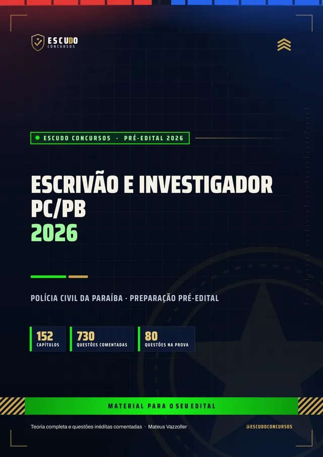
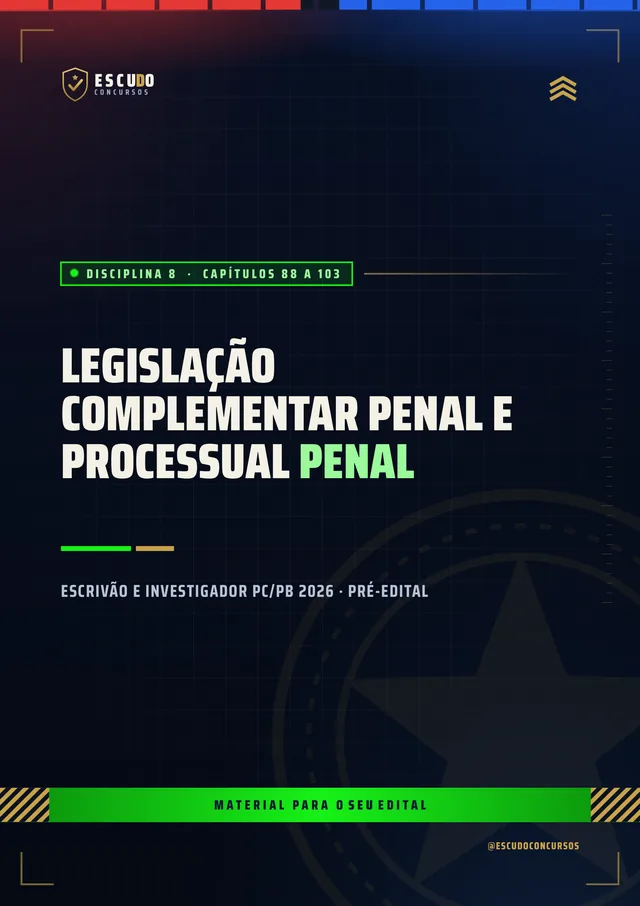
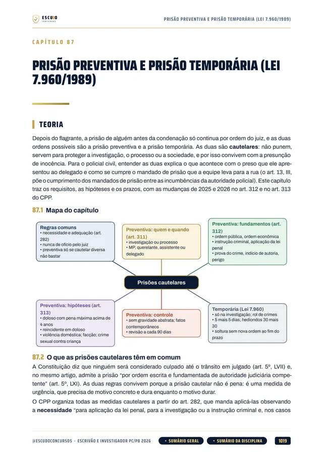
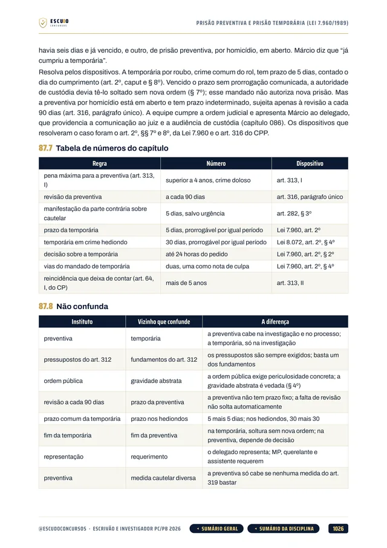
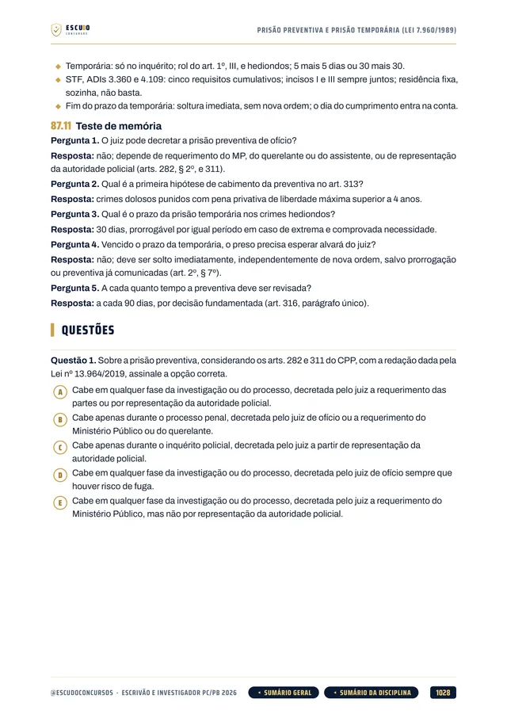
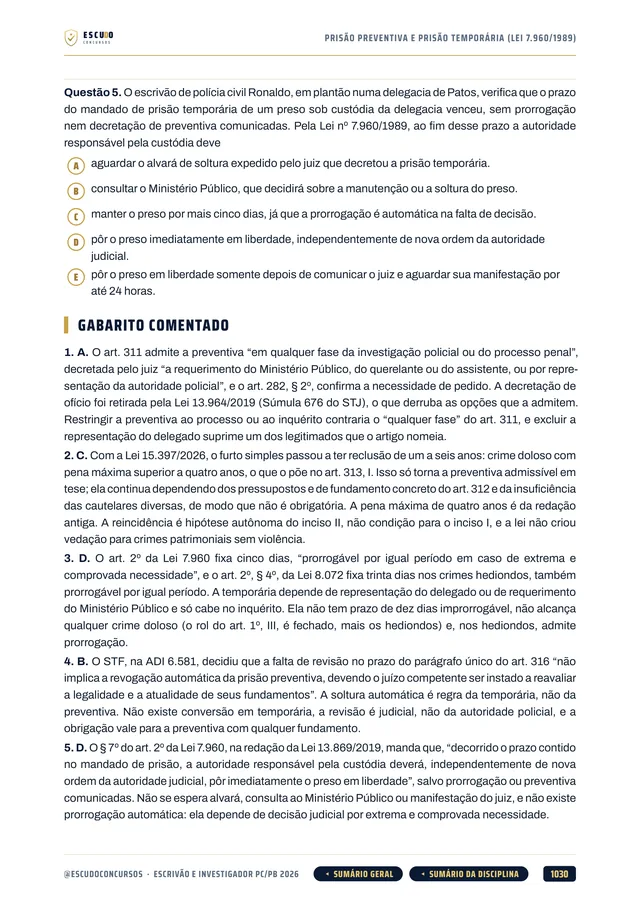
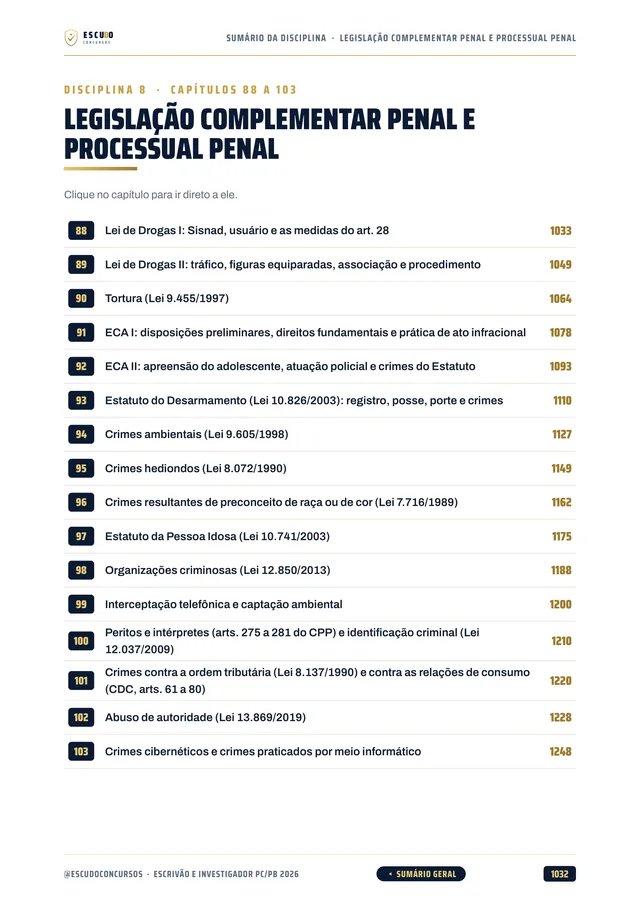
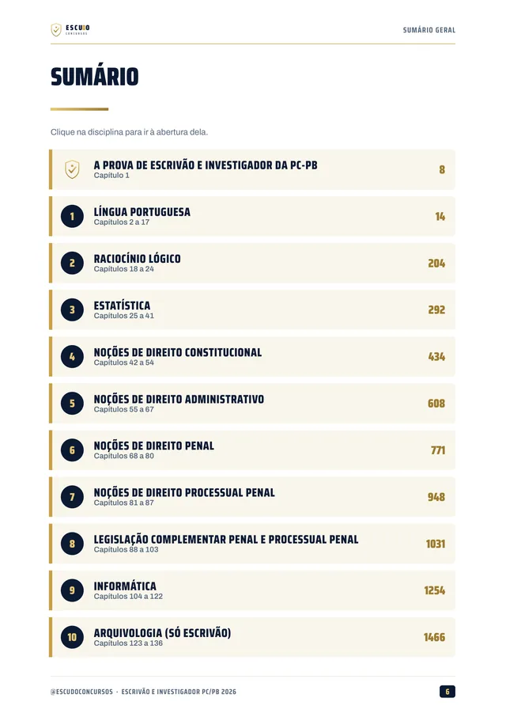
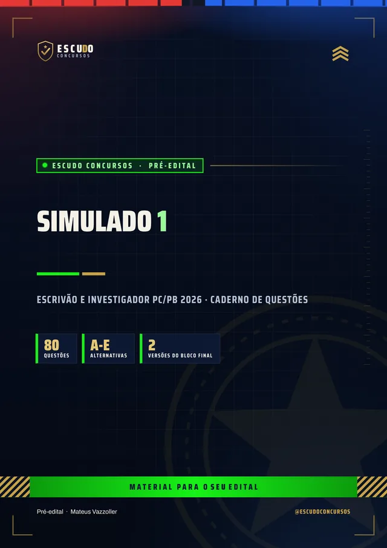

Simulado 1
No meio do caminho
Para medir onde você está e ajustar o estudo enquanto o edital não sai.
30 dias após a compra
Material independente, sem vínculo com o Governo da Paraíba, com a Polícia Civil da Paraíba nem com a banca.


730questões
comentadas
ConcursoPolícia Civil/PB2026 · Escrivão e Investigador
Briefing
O concurso de Escrivão e de Investigador da Polícia Civil da Paraíba ainda não tem edital, banca nem autorização. Quem estuda agora estuda pelo programa do último edital, o de 2021, sem esperar. Curso feito sobre o Edital nº 01 SEAD/SEDS/PC (Cebraspe), item por item, com a legislação na redação vigente em 26/11/2026, a LC 85/2008 da Paraíba, questões de 5 alternativas com gabarito comentado e treino da prova discursiva.
Pré-edital: baseado no último edital (nº 01/2021, Cebraspe). Atualização grátis quando sair o novo
de R$ 47 por 21% OFF
R$37
Com o cupom PCPB37 até 31/12/2026. Preço de pré-venda: quando o edital sair, o curso vai subir de preço. Quem compra agora recebe de graça a atualização para o edital novo. Pelo botão, o cupom já vai preenchido.
R$47
Curso completo, com acesso imediato.
Ainda não vai comprar? Receba o aviso quando sair o edital
Edital ainda não saiu
Deixe seu e-mail e o seu WhatsApp. No dia em que o edital sair, você recebe o resumo (vagas, salário, inscrições e o que mudou no programa) e um cupom só para quem está na lista. Sem spam: só o aviso do edital.
Seus dados ficam só com a ESCUDO e servem só para este aviso. Para sair da lista, é só responder o e-mail.
Terreno
O concurso
Em 26/11/2026, os levantamentos feitos para este curso não encontraram concurso novo autorizado, edital de 2026, comissão nem banca definida para os cargos de Escrivão e de Investigador da Polícia Civil da Paraíba. O que existe são sinais: o Tribunal de Contas do Estado (TCE-PB), no Acórdão APL-TC 00503/25, publicado em 02/12/2025, recomendou adequar o efetivo da Polícia Civil à Lei Estadual nº 11.066/2017 com a realização periódica de concursos públicos; e o concurso de 2021 teve a validade prorrogada até 2027, com o governo seguindo a chamada de turmas do curso de formação. Os "editais" de 2026 que aparecem no site do Cebraspe são convocações do concurso de 2021, não um certame novo. Recomendação de tribunal de contas, convocação e notícia de blog não são edital. Este curso não promete edital, banca nem data.
Por isso o curso segue o último edital da carreira, o Edital nº 01 SEAD/SEDS/PC, de 2021, executado pelo Cebraspe, para Escrivão de Polícia (515 vagas, contando as de pessoas com deficiência) e Agente de Investigação (400 vagas), de nível superior em qualquer área. O Agente de Investigação hoje se chama Investigador de Polícia Civil (Lei estadual nº 12.455/2022). A prova teve duas objetivas de múltipla escolha com cinco alternativas (A a E), sem desconto por erro: a P1, de 20 questões de conhecimentos gerais, e a P2, de 60 questões de conhecimentos específicos; mais uma prova discursiva de até 30 linhas, de 15 pontos.
Estudar agora pelo programa de 2021 economiza meses. Os dois cargos têm o mesmo programa, exceto o último bloco: Arquivologia só para o Escrivão e Contabilidade Geral só para o Investigador. Quando o edital novo sair, a banca, o formato e o programa podem mudar: o programa será conferido item por item e o curso, ajustado.
| Prova | Disciplinas | Questões |
|---|---|---|
| P1 · 1 ponto cada | Língua Portuguesa, Raciocínio Lógico, Estatística, Noções de Direito Constitucional e Noções de Direito Administrativo (conhecimentos gerais) | 20 |
| P2 · 2 pontos cada | Noções de Direito Penal, Direito Processual Penal, Legislação Complementar, Informática e, por último, Arquivologia (Escrivão) ou Contabilidade Geral (Agente de Investigação, hoje Investigador) | 60 |
| Prova de 2021: 80 questões objetivas e 140 pontos (mínimo de 10 na P1 e de 60 na P2), mais discursiva de 15 pontos (NPD mínimo de 7,50). O edital não informou quantas questões havia de cada disciplina. É só referência: o edital novo pode mudar banca, formato e programa. | 80 |
Atualização
De 2021 para hoje
O nome do cargo: o Agente de Investigação do edital de 2021 passou a se chamar Investigador de Polícia Civil pela Lei estadual nº 12.455/2022, que alterou a LC 85/2008 (art. 232). O curso trata do Escrivão e do Investigador.
Leis revogadas no programa: o programa de 2021 cita a Lei nº 9.034/1995 (crime organizado) e a Lei nº 10.054/2000 (identificação criminal), ambas revogadas. O curso ensina as vigentes, a Lei nº 12.850/2013 e a Lei nº 12.037/2009 (capítulos 98 e 100).
Nomes antigos: "crimes contra os costumes" são hoje crimes contra a dignidade sexual, e o "Estatuto do Idoso" é o Estatuto da Pessoa Idosa (Lei nº 10.741/2003, com a redação da Lei nº 14.423/2022).
Norma da Paraíba: o programa de 2021 cita a LC 85/2008 (Lei Orgânica e Estatuto da Polícia Civil da Paraíba), lei estadual que quase nenhuma apostila genérica cobre e que aqui tem 4 capítulos próprios (64 a 67). Todas as leis estão na redação vigente em 26/11/2026, não na de 2021.
Protocolo
O formato
Você estuda lendo, no seu ritmo, pela área de membros da Hotmart ou com os arquivos baixados. O curso segue o programa do Edital nº 01 SEAD/SEDS/PC de 2021, disciplina por disciplina, com a legislação federal e da Paraíba conferida no texto oficial vigente em 26/11/2026. Quando sair o edital novo, vale o que ele disser.
Reconhecimento
Páginas reais do PDF
Toque numa página para ver em tamanho maior.





100% em PDF · Garantia de 7 dias · Pagamento pela Hotmart
Equipamento
O que você recebe
Curso em PDF organizado em 27 módulos (25 pelas disciplinas e 2 de simulado), com 1.769 páginas no padrão visual ESCUDO, para ler no computador, no tablet, no celular ou no app da Hotmart. Não há videoaulas.
152 capítulos cobrindo o programa de 2021, atualizado: Língua Portuguesa (16), Raciocínio Lógico (7), Estatística (17), Direito Constitucional (13), Direito Administrativo (13), Direito Penal (13), Direito Processual Penal (7), Legislação Complementar (16), Informática (19), Arquivologia (14, só Escrivão), Contabilidade Geral (11, só Investigador) e Discursiva (5), mais um capítulo de abertura sobre a prova e o plano de estudo.
730 questões inéditas com 5 alternativas, de (A) a (E), todas com gabarito comentado: por que a correta está correta e onde está o erro de cada uma das outras.
LC 85/2008 em 4 capítulos próprios: a Lei Orgânica e o Estatuto da Polícia Civil da Paraíba, com natureza e estrutura, carreiras e atribuições, direitos, deveres e proibições, e o regime disciplinar, conferidos na lei estadual.
Legislação Complementar em 16 capítulos, a parte específica que a P2 cobra: drogas, tortura, ECA, desarmamento, crimes ambientais, hediondos, racismo, pessoa idosa, organizações criminosas, interceptação, identificação criminal, ordem tributária, abuso de autoridade e crimes cibernéticos.

Um curso para os dois cargos: Arquivologia (só Escrivão) e Contabilidade Geral (só Investigador) ficam em módulos separados e marcados, para você estudar só o do seu cargo.
5 capítulos da Prova Discursiva (até 30 linhas, 15 pontos, NPD mínimo de 7,50 em 2021): regras de correção, atualidades, repertório, estrutura e 5 propostas comentadas.
Pegadinhas e quadros "não confunda" ao longo da teoria, para você não cair nas armadilhas que a banca costuma montar.
Teoria com recursos para memorizar: mapa de cada capítulo, esquemas, revisão relâmpago e teste de memória no fim de cada capítulo.
Navegação clicável: do sumário você vai direto à disciplina e ao capítulo, e volta pelos botões do rodapé.

2 simulados inéditos de 80 questões de A a E, no formato da P1 e da P2 de 2021, com as duas versões do bloco final e o gabarito de cada cargo, e caderno de comentários.

Plano de ação
Área de membros
| Módulo | Conteúdo | Liberação |
|---|---|---|
| M0 Comece aqui | Apresentação + capítulo 001 (como é a prova e como usar o curso). Bônus: PDF completo em um arquivo para baixar e imprimir | Na compra; o PDF completo no 8º dia |
| M1 Língua Portuguesa I | Capítulos 002 a 007 | Na compra |
| M2 Língua Portuguesa II | Capítulos 008 a 013 | Na compra |
| M3 Língua Portuguesa III | Capítulos 014 a 017 | Na compra |
| M4 Raciocínio Lógico | Capítulos 018 a 024 | Na compra |
| M5 Estatística I | Capítulos 025 a 031 | Na compra |
| M6 Estatística II | Capítulos 032 a 041 | Na compra |
| M7 Direito Constitucional I | Capítulos 042 a 047 | Na compra |
| M8 Direito Constitucional II | Capítulos 048 a 054 | Na compra |
| M9 Direito Administrativo I | Capítulos 055 a 060 | Na compra |
| M10 Direito Administrativo II | Capítulos 061 a 067 | Na compra |
| M11 Direito Penal I | Capítulos 068 a 073 | Na compra |
| M12 Direito Penal II | Capítulos 074 a 080 | Na compra |
| M13 Direito Processual Penal | Capítulos 081 a 087 | Na compra |
| M14 Legislação Complementar I | Capítulos 088 a 092 | Na compra |
| M15 Legislação Complementar II | Capítulos 093 a 097 | Na compra |
| M16 Legislação Complementar III | Capítulos 098 a 103 | Na compra |
| M17 Informática I | Capítulos 104 a 107 | Na compra |
| M18 Informática II | Capítulos 108 a 113 | Na compra |
| M19 Informática III | Capítulos 114 a 122 | Na compra |
| M20 Arquivologia I (só Escrivão) | Capítulos 123 a 129 | Na compra |
| M21 Arquivologia II (só Escrivão) | Capítulos 130 a 136 | Na compra |
| M22 Contabilidade Geral I (só Investigador) | Capítulos 137 a 142 | Na compra |
| M23 Contabilidade Geral II (só Investigador) | Capítulos 143 a 147 | Na compra |
| M24 Prova discursiva | Capítulos 148 a 152 | Na compra |
| M25 Simulado 1 | 80 questões, com as duas versões do bloco final, e caderno de comentários | 30 dias após a compra |
| M26 Simulado 2 | 80 questões, com as duas versões do bloco final, e caderno de comentários | 60 dias após a compra |
Treinamento
Treino no formato da prova
Cada simulado tem 80 questões de A a E, no formato da prova de 2021: 20 da P1 (Língua Portuguesa 5, Raciocínio Lógico 2, Estatística 5, Constitucional 4 e Administrativo 4) e 60 da P2 (Penal 11, Processual Penal 6, Legislação Complementar 14, Informática 17 e 12 do bloco final, que vem em duas versões: Arquivologia para o Escrivão e Contabilidade Geral para o Investigador). Como o edital de 2021 não informou quantas questões havia de cada disciplina, a distribuição segue o tamanho de cada bloco do programa. Cada simulado tem caderno de comentários, com o gabarito de cada cargo. A prova discursiva não entra nos simulados: ela é treinada nos capítulos 148 a 152. O formato será conferido quando o edital sair.
Simulado 1
Para medir onde você está e ajustar o estudo enquanto o edital não sai.
30 dias após a compra
Simulado 2
Para conferir a evolução depois de mais um mês de estudo.
60 dias após a compra
Perfil
Para quem é
Para quem vai prestar o concurso de Escrivão ou de Investigador da Polícia Civil da Paraíba e quer começar agora, pelo programa do último edital, com a LC 85/2008, o Direito Penal, o Processo Penal e a Legislação Complementar (a P2 valeu 120 dos 140 pontos das objetivas em 2021) cobertos por inteiro, e a prova discursiva treinada em 5 capítulos.
Proteção
Você tem 7 dias de garantia pela Hotmart. Se não for o que você esperava, pede o reembolso pela própria Hotmart, dentro do prazo.
Cronograma
Sem surpresa na área de membros
Na compra: todas as disciplinas em PDF, uma por módulo, com a teoria e as questões comentadas. É o curso inteiro, para começar a estudar no mesmo dia.
8 dias após a compra: o PDF completo para imprimir. É o mesmo conteúdo dos módulos num arquivo só, liberado depois da garantia de 7 dias.
Simulado 1: 30 dias após a compra, para medir onde você está no meio da preparação.
Simulado 2: 60 dias após a compra, porque ainda não há data de prova marcada.
O PDF completo e os simulados aparecem bloqueados na área de membros até a data de cada um: não é conteúdo faltando, é a liberação programada.
Instrução
Dúvidas
Não. É um curso 100% em PDF: teoria, questões comentadas e simulados para ler e resolver.
O acesso é imediato depois da confirmação do pagamento, pela área de membros da Hotmart (web ou app). O PDF completo, em um único arquivo, para baixar e imprimir, é liberado no 8º dia.
O Simulado 1 é liberado 30 dias após a compra e o Simulado 2, 60 dias após a compra, porque o concurso ainda não tem data de prova.
Não. Em 26/11/2026, os levantamentos feitos para o curso não encontraram concurso novo autorizado, edital de 2026, comissão nem banca definida. O que existe é a recomendação do TCE-PB (Acórdão APL-TC 00503/25, de 02/12/2025) de realizar concursos periódicos para adequar o efetivo, e o concurso de 2021 com validade prorrogada até 2027. Os "editais" de 2026 do site do Cebraspe são convocações desse concurso, não certame novo. Recomendação de tribunal de contas não é autorização, e blogs que falam em datas são estimativas. O curso não promete edital nem data: é de pré-edital e segue o último edital da carreira.
Porque é o último edital da carreira (Edital nº 01 SEAD/SEDS/PC, de 2021, executado pelo Cebraspe, para Escrivão de Polícia e Agente de Investigação, entre outros cargos). O programa dele é a melhor referência que existe: Língua Portuguesa, Raciocínio Lógico, Estatística, Direito Constitucional, Direito Administrativo (com a LC 85/2008), Direito Penal, Direito Processual Penal, Legislação Complementar, Informática e, por último, Arquivologia ou Contabilidade Geral.
Ainda não foi definida. O concurso de 2021 foi feito pelo Cebraspe, e o curso parte dele só porque foi o último. Outra banca pode ser contratada; por isso o estudo é feito sobre o conteúdo e o texto da lei, e não sobre o estilo de uma instituição. Quando a banca for conhecida, o curso será ajustado.
Ainda não há edital novo. No último edital (2021), a prova teve duas objetivas de múltipla escolha, com cinco alternativas (A a E) e uma só correta, e sem desconto por erro: a P1, de conhecimentos gerais, com 20 questões de 1 ponto (Língua Portuguesa, Raciocínio Lógico, Estatística, Direito Constitucional e Direito Administrativo), e a P2, de conhecimentos específicos, com 60 questões de 2 pontos (Penal, Processual Penal, Legislação Complementar, Informática e Arquivologia ou Contabilidade Geral). Era eliminado quem fizesse menos de 10 pontos na P1 ou menos de 60 na P2. O edital não informou quantas questões havia de cada disciplina. A prova durou 4 horas e 30 minutos. O curso segue esse quadro e será conferido quando o edital sair.
Sim. Desde a Lei estadual nº 12.455/2022, que alterou a LC 85/2008, o Agente de Investigação do edital de 2021 se chama Investigador de Polícia Civil. O curso usa os dois nomes quando cita o edital e trata do Escrivão e do Investigador. Os requisitos do edital de 2021 eram nível superior em qualquer curso para os dois cargos; o edital novo dirá os de agora.
O programa é o mesmo para os dois cargos, palavra por palavra, com uma única diferença: o Escrivão tinha Arquivologia e o Agente de Investigação (hoje Investigador) tinha Contabilidade Geral. No curso, esses blocos estão em módulos separados e marcados "só Escrivão" e "só Investigador". Estude tudo, exceto o bloco do outro cargo. Os simulados trazem as duas versões do bloco final.
Sim. Os capítulos 148 a 152 treinam a discursiva: as regras de correção (a nota é NPD = NC - 20 x NE / TL, e abaixo de 7,50 o candidato é eliminado), atualidades de segurança pública, repertório, estrutura dissertativa e cinco propostas comentadas. Em 2021 era uma dissertação sobre tema da atualidade, de até 30 linhas, de 15 pontos. A discursiva não entra nos simulados.
Está na redação vigente em 26/11/2026, data de corte do material. Com o edital novo, a data de corte dele vale, e o curso é reconferido.
Não. As 730 questões de treino e as dos simulados são inéditas, escritas a partir do programa do último edital.
Você tem 7 dias de garantia pela Hotmart. Se não for o que você esperava, pede o reembolso.
Missão
Polícia Civil/PB 2026 · Escrivão e Investigador
de R$ 47 por 21% OFF
R$37
Com o cupom PCPB37 até 31/12/2026. Preço de pré-venda: quando o edital sair, o curso vai subir de preço. Atualização grátis para o edital novo.
R$47
Curso completo, com acesso imediato.
Material para o SEU edital. ESCUDO Concursos.
Continue estudando